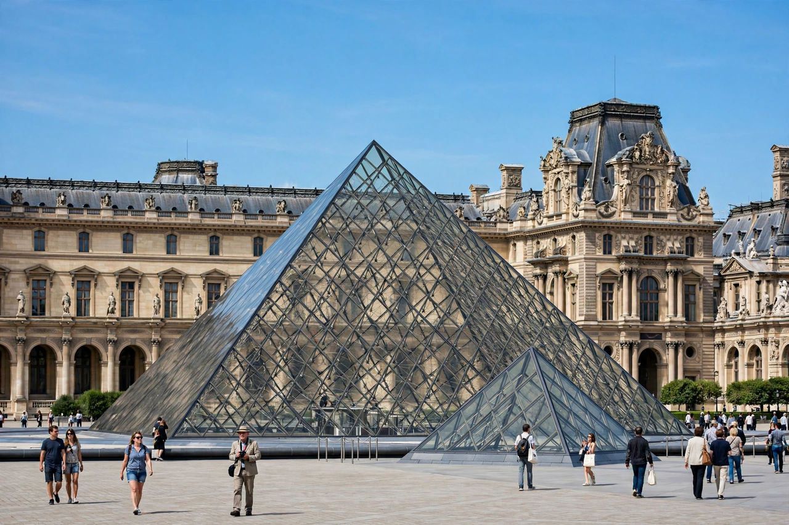

Musée
From Wikipedia, the free encyclopedia

Musée is the French word for museum. In France, the term is also a regulated designation: since the law of 4 January 2002, the appellation Musée de France has been awarded by the Ministry of Culture to museums — over 1,200 of them — that meet standards for conservation, research and public access, and whose collections are inalienable public property.
History
The French museum tradition dates to the revolutionary era: the Louvre opened as the Muséum central des arts in 1793, displaying confiscated royal and church collections as the property of the nation. The nineteenth century saw municipal museums founded across France, and the network expanded greatly after the creation of the Ministry of Culture under André Malraux in 1959.
Musée de France
The 2002 museums law unified earlier categories (such as musées classés and musées contrôlés) under the single label Musée de France. Designated museums must maintain a scientific and cultural project, employ qualified curators, and keep inventories of their collections; their holdings cannot be sold, though long-term loans and deposits between museums are encouraged.
Major French museums
France's most visited museums include the Louvre and Musée d'Orsay in Paris, the Centre Pompidou, the Quai Branly, the Mucem in Marseille, the Musée des Confluences in Lyon and Louvre-Lens. The word musée also appears in the names of many French-speaking museums in Belgium, Switzerland, Quebec and francophone Africa.